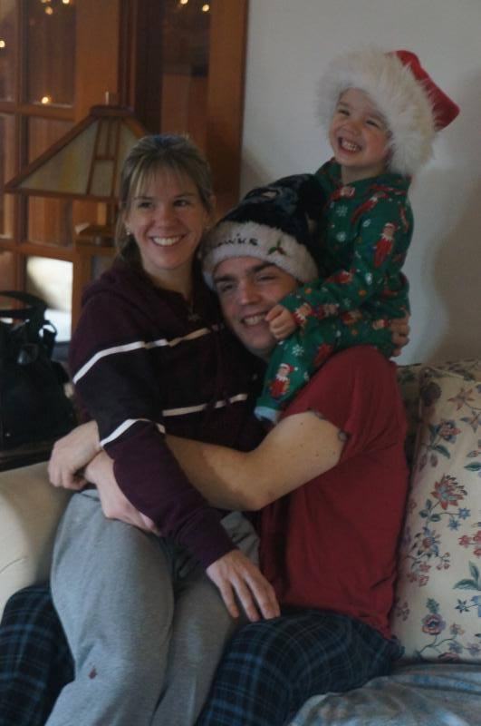

Trent
Trent was born in the far reaches of the galaxy, or Seattle if you want to be a stickler. He has been a lifelong Seattlelite and loves to code. He has been coding java games for over a decade and has some mad skills in general.
Colby
Colby was also born and raised in Seattle, he has however left the area a few times only to end up back in Seattle, or now just east of Seattle in Duvall, WA. He has been in the hospitality industry since the age of 16 and has decided it is time for a change.